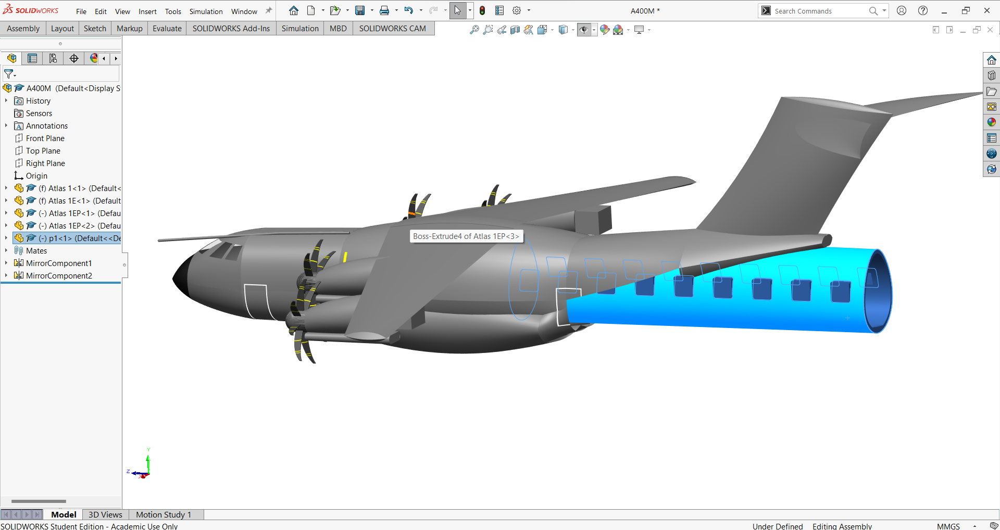

Robotics & Physical Computing
SolidWorks Robotic Arm
Kinematic assembly, joint stacks, and motion paths modeled for fabrication — engineering as a visible argument.
Role: CAD engineer | Mechanical designer
Algorithmic & Technical Breakdown
The arm is a chain of constrained mates. Motion paths are not decoration: they prove reach, collision, and manufacturable travel before metal exists.
Base / yaw
→
Shoulder pitch
→
Elbow
→
Wrist / end effector